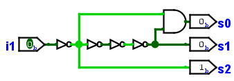
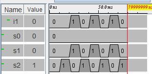
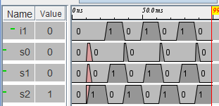
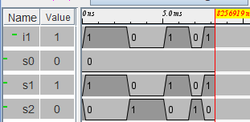

Onglet Options
Dans ce panneau vous pouvez sélectionner les différents modes de capture des signaux et en certains paramètres.

Circuit utilisé pour les exemples ci-dessous.
Logisim fournit trois modes d'enregistrement et une option de capture des détails :
- Mode stop-motion / sans les détails fins :
- Mode stop-motion / avec les détails fins :
- Mode en continu sans les détails fins :
- Mode en continu / avec les détails fins :
- Les données ne sont capturées que lorsque tous les signaux se sont stabilisés, masquant ainsi toute fluctuation transitoire du signal pouvant survenir au cours de la propagation. Chaque valeur capturée est enregistrée comme si elle était restée stable pendant la valeur du champ Échelle de temps.

Dans l'enregistrement ci-dessus, nous avions paramétré une valeur de 10ms dans le champ Échelle de temps. On peut observer dans le diagramme la phase d'initialisation qui occupe les premières 10ms, les 10ms suivantes correspondent à l'attente avant notre premier clic sur l'entrée i1 et ensuite 10ms pour chaque clic. Nous avons effectué 6 clics, peu importe le temps réel entre les clics. C'est la valeur du champ Échelle de temps qui fixe cela.
- Les données sont capturées chaque fois que la valeur d'un signal change, y compris les fluctuations transitoires du signal qui peuvent se produire pendant la propagation. Les fluctuations transitoires sont enregistrées comme si le délai de la porte était de la valeur du champ Retard de la porte, et les signaux stables sont enregistrés comme s'ils étaient maintenus stables pendant la valeur du champ Échelle de temps.

Dans l'enregistrement ci-dessus nous avions paramétré une valeur de 10ms dans le champ Échelle de temps et 500us dans le délai de Retard de la porte. Le diagramme est pratiquement le même, mais on peut observer qu'un signal est présent sur la sortie s0 et que l'initialisation a été un peu plus longue, la transitoire produite par la porte And en réaction au retard généré sur sa seconde entrée par les trois portes Not a été enregistré et il est présent a chaque transition descendante de l'entrée i1. Ici aussi peu importe le temps réel que nous avons passé entre les clics.
- Les données sont capturées en continu, chaque fois que le simulateur est activé. Les fluctuations transitoires du signal sont ignorées. Chaque seconde de temps réel est enregistrée comme la valeur du champ Échelle de temps de temps de circuit simulé.

Dans l'enregistrement ci-dessus nous avions paramétré une valeur de 1.0ms dans le champ Échelle de temps ensuite un clic sur l'entrée s1 a modifié celle-ci immédiatement après la réinitialisation de la simulation, puis environs 4 secondes plus tard un autre clic, puis 2 secondes plus tard encore un clic. On observe que les secondes réelles ont été enregistrées comme des millisondes de la simulation.
- Les données sont capturées en continu, chaque fois que le simulateur est activé. Les fluctuations transitoires du signal sont capturées. Chaque seconde de temps réel est enregistrée comme la valeur du champ Echelle de temps de temps de circuit simulé.

Dans l'enregistrement ci-dessus nous avions paramétré une valeur de 1.0ms dans le champ Echelle de temps ensuite un clic sur l'entrée s1 a modifié celle-ci immédiatement après la réinitialisation de la simulation, puis environs 1,5 seconde plus tard un autre clic, puis 3 secondes plus tard encore un clic. On observe que les secondes réelles ont été enregistrées comme des millisondes de la simulation et que la sortie s0 a été enregistrée avec la transitoire de la porte And.
Next: Timetable tab.